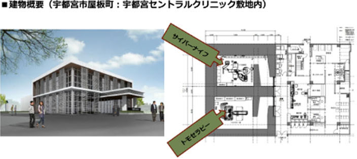
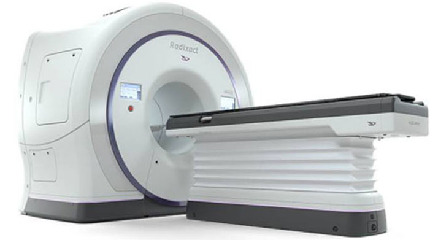
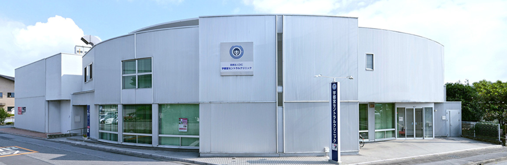

新华网采访佐藤俊彦
2016年06月07日 08:35:29 来源：新华网
新华网北京6月7日电
（刘映）近年来，海外医疗已成为许多国人出境游的新选择。目前以去日本做精密体检、美国治疗癌症以及英国做肝脏移植最为常见。近日，日本医疗法人DIC宇都宫中心医院理事、俊彦医院管理首席顾问医生佐藤俊彦在接受新华网专访时表示，作为世界上精密检查最发达的国家之一，日本癌症患者5年生存率高，和日本国人重视体检及世界领先的癌症防治体系密切相关。
日本医疗法人DIC宇都宫中心医院理事、俊彦医院管理首席顾问医生佐藤俊彦
日本老龄化形势严峻，重推早诊早治理念
作为率先进入老龄化的国家之一，资料显示，预计到2025年，日本65岁以上人群占比将达25%，这对于日本的卫生部门来说，是个非常严重的问题，因而日本现在非常注重早防早治概念的推广。对于癌症来说，早发现早诊治是最为关键的因素，其预后和到晚期才诊治相比，其差距可谓“生与死”的距离。
佐藤俊彦表示，日本拥有一套全方位多层级、综合复式、世界领先的癌症检查体系，针对不同的癌症疑难特点设置不同的检查方法，并进行多重检查，确保早初期微小癌细胞的发现。“早期发现的肿瘤临床治愈率很高，有很多数据，比如乳腺癌的及早发现，10年生存时间，可超过90%。对于一些发展快、凶险的恶性肿瘤来说，就不好说了。对于三四期肿瘤，即便把所有的治疗方法如手术、放疗、化疗都做一遍，治疗率也仅有25%。”佐藤俊彦说，早期发现的肿瘤，治疗程序也较为简单，以手术为主，且多采取无创治疗和微创治疗。很多早期肿瘤通过微创治疗可以达到治愈状态，这与之前提到肿瘤不能治愈的理念是不同的，患者负担的费用也会更小。
早期诊断“精密检测+专业技师”很重要
影像检查是早诊早治的有效手段，特别是对肿瘤、脑血管病、心血管病三大成人疾病，影像检查可以说是最有依据的。
佐藤俊彦表示，对于乳腺癌、前列腺癌这些高发的生殖器癌症，则主要使用超声波等仪器进行检测，同时配合血液中的肿瘤标志物如PSA、CA125等，进行整体评估，“作为病症诊断与治疗的重要入口，仅宇都宫中心医院每年就产生数万人次影像。以PET/CT为例，一人的影像数量达到数千枚以上，日本每年因此产生4000万件医疗影像数据，但由于放射诊断医生严重短缺，只有40%的人得益于专人诊断，所以我通过创立日本最大的远程影像诊断公司来解决这一难题。”
据了解，作为日本专业的防癌检查机构之一，宇都宫中心医院的影像诊断中心拥有多个世界领先水平的检测仪器，包括3.0T和1.5T的MRI(磁共振成像系统)、PET/CT（正电子发射层扫描）、西门子ABVS（乳房超声波设备）、西门子3D钼靶设备等。为了提高乳腺癌的诊疗水平，2013年，宇都宫中心医院专门成立了日本北关东地区第一家女性乳腺影像中心，引进了日本首台PEM（乳腺专用正电子扫描仪）等，以提高乳腺癌早期筛查、复诊的“正确性”及“操作简单”性。
相比先进的检测仪器，佐藤俊彦表示，专业技师也非常重要。“肿瘤如果很大的话，大家都能看到。关键就是在它小的时候，比如乳腺癌，在它长到2厘米时，可以被很多医生确诊为乳腺癌，但在1厘米时如何进行区分，如何运用这些设备来进行精密检查，来区分到底是良性还是恶性的，就很考验读影医生的技术和经验了。不能说怀疑就做病理，因为穿刺会对人体造成创伤和痛苦，要用不同的手段进行精密检查，一定要进行创伤性检查时应先确定好。”
日本医疗法人DIC宇都宫中心医院
质子治疗成海外肿瘤治疗新选择
随着精准医学的发展，人类抗击肿瘤的技术也在不断研发、更新和应用。对肿瘤病灶进行“立体定向爆破”的质子治疗，以其精度高、放疗副作用少等优势，成为目前国际最先进的放疗手段，受到国内外专家的关注。据了解，当前全球质子治疗行业发展非常迅速，能提供质子治疗的医院已超过60家，但基本上都在美国、日本等国家。
佐藤俊彦表示，作为治癌利器，质子治疗并非适用于所有癌症。根据国际临床资料显示，该技术对头颈部、脑、肺癌、肝癌、前列腺癌、胰脏癌及鼻咽癌等部位肿瘤有较好疗效，对于一些不能手术的患者及儿童肿瘤患者来说，质子治疗也是一种新选择。
“今年3月份，我们帮助一个3岁的脑肿瘤孩子，转诊到日本筑波大学附属医院，接受了质子治疗。”佐藤俊彦说，在转诊过程中，首先要实现患者信息准确定位，准确传递给国外医生，除文字外，还要有影片，因为影片是共通的，再结合双方医生的意见，来最终定出治疗结果。当双方一致认为需要进行质子治疗时，就迅速安排患者住院。
高危人群去日本体检“信息越全越好”
随着海外医疗的兴起，越来越多的中国人选择去国外诊疗，日本由于和中国临近，且价格比美国低，成为很多人的首选。那么哪些人适合去日本做防癌体检或者疾病治疗呢？
佐藤俊彦表示，首先是针对防癌体检人群：对于40岁以后、有家族病史的高危人群，或者对健康有顾虑想进一步检查的人来说，可以去日本选择有PET/CT相关设备的专业机构做更精密的检查。如果在国内做过较为全面的检查以及基因筛查，可以把所有的报告准备好，包括影像资料，然后提供给日本的体检中心，可以省去很多不必要的检查，以帮助安排个性化的体检方案。如果没有做过全面检查，建议先做全面检查，再做有针对性的检查。
其次是针对患者看病，第一步要进行医疗信息整理，要尽可能地从医生手里拿到有效的影像数据、病理切片等，完整地把患者疾病治疗的经过按时间顺序列好。同时，平常需要常用的药物进行整理，以防到了日本后，有的药当地没有或者当地有而国内没有。如果可以的话，最好有家中国和日本远程联诊的医院，这个医院还可以给患者进行后续治疗，从而医生能更清楚患者之后的治疗及产生的副作用，更好地进行患者管理。这是不可缺少的一部分，最大的难度就是要有国内临床医生配合，多交流用药经验，对提高医疗水平有帮助。
南京医科大校领导会见日本宇都宫中心医院佐藤俊彦院长
2016年11月16日 09:46:35
11月11日，日本宇都宫中心医院佐藤俊彦院长一行来我校一附院交流。副校长、一附院院长唐金海，一附院健康管理中心、一附院院办及国际合作与交流处等部门负责人参加了交流。
副校长唐金海对来宾一行表示欢迎，介绍了一附院基本情况，希望通过深入交流与合作，为双方一流医疗机构开展学术交流和技术合作搭建更广阔的平台，从而促进相关医疗技术水平的发展。在交流中，双方围绕早癌筛查、远程诊断、健康管理等方面进行了研讨。来访期间，佐藤俊彦院长一行听取了一附院健康管理中心基本情况和开展项目介绍，并进行了实地参观考察。
日本宇都宫中心医院成立于1995年，是日本区域影像诊断中心，被政府卫生保健部门认证为乳腺癌精密检查医疗机构，在早癌筛查尤其是影像诊断方面在日本处于领先的地位。
日本首个配备射波刀和托姆刀的私立独立放疗中心诞生了！
放射线治疗中最先进方法是采用立体定向照射的密集放射线治疗法。
射波刀和托姆刀就是可以进行这种治疗的设备。美国ASCO（美国临床肿瘤学会）已认可射波刀为不能手术早期肺癌治疗的金标准。托姆刀则可以应对复杂的肿瘤形状，同时肿瘤晚期多处扩散后还可一次性多点照射。

医疗法人DIC
宇都宫中心医院引进这两台最新放疗设备均来自安科锐（Accuray）公司，中心为2层建筑，总面积1500平方，投资16亿日元，于2017年12月投入使用。其中第五代射波刀乃日本第五台设备。托姆刀采用最新型Radixact(X7)1号机，在日本尚属首台设备。
两台设备结合的放疗中心模式可以应对几乎所有种类的肿瘤治疗。以射波刀为例，通院5-10次就可以完成全部治疗，最大限度的减轻了患者的负担，同时可以降低昂贵的治疗费用。对于不适合手术治疗或不想手术治疗的患者来说，放疗中心将带来新的希望。
 射波刀适应范围：
脑肿瘤、头颈部癌（口腔或喉咙肿瘤。舌癌、喉癌、咽癌等）、皮肤癌、食道癌、肺癌、乳腺癌、肝癌、胰腺癌、肾癌、膀胱癌、卵巢癌、子宮癌、前列腺癌、睾丸癌、骨肉瘤、白血病、恶性淋巴瘤、骨转移
射波刀适应范围：
脑肿瘤、头颈部癌（口腔或喉咙肿瘤。舌癌、喉癌、咽癌等）、皮肤癌、食道癌、肺癌、乳腺癌、肝癌、胰腺癌、肾癌、膀胱癌、卵巢癌、子宮癌、前列腺癌、睾丸癌、骨肉瘤、白血病、恶性淋巴瘤、骨转移

托姆刀适应范围：
脑肿瘤、脑动静脉畸形、乳腺癌、血管肉瘤、头颈部癌、直肠・肛门癌、前列腺癌、膀胱癌、肾盂・尿管癌、子宮癌、恶性淋巴瘤、全身照射（血液癌）、中枢神经、脑转移、骨转移、淋巴结转移等螺旋回转照射……全身照射、ＳＲＳ（定位放射线治疗）、前列腺＋淋巴、头颈部、胸壁＋淋巴、全脑ＳＩＢ（照射脑部时、避开海马体的照射法。原发＋预防领域）、全脑全脊椎等固定他门照射和螺旋回转照射的组合……体部定位照射、多发转移、部分乳房照射、前列腺、肺等
译文：
欧力士株式会社（所在地：东京都港区、社长：井上 亮）、与株式会社CMC（所在地：枥木县宇都宮市、社长：大久保 辉行）、以及株式会社MEDIMAGE（所在地：枥木县宇都宮市、社长：大久保
辉行），以推进面向医疗机构的医疗服务事业为目的，正式进行资本合作。
CMC及MEDIMAGE专为在预防医疗领域提供高品质服务的「宇都宫中心医院」（运营：医疗法人DIC、所在地：枥木县宇都宮市 代表：佐藤 俊彦）提供医疗服务支持。

「宇都宫中心医院」通过高价值医疗体检、健康诊断、会员制俱乐部，对恶性肿瘤等重大疾病提供专业诊断的预防医疗服务机构。配有完备的磁共振、CT、PET-CT等高精度并先进的影像诊断仪器，对区域性健康促进做出了贡献。今年年底还将引进高精度放疗设备，开始先进放射线治疗。
日本即将进入老龄化社会的发展期，医疗技术和科学技术的进化、人类对于健康意识的提高，使预防医疗领域被寄予了极大成长的期望。此外，通过预防医疗促进健康寿命增长与医疗经费扩大削减的趋势息息相关，进而对维持医保制度的可持续性也所贡献。
「宇都宫中心医院」代表佐藤俊彦医生表示：“医疗行业中缺乏财务及市场、Ｍ＆Ａ等经营相关的专业能力。通过协同欧力士的运营经验，将推进影像中心多点开设、对手术难治疗的高龄患者进行放射治疗・免疫治疗相关临床服务的发展。”
欧力士面向医疗法人提供融资租赁・金融服务、搭载CT、磁共振体检车租赁服务，在医疗领域开展了多样化事业。本次合作将通过为「宇都宫中心医院」提供运营支持，今后将扩大与预防医疗领域中的特色门诊及医院的合作，对日本的预防医疗和区域性医疗发展做出贡献。
● 株式会社CMC概要
名 称： 株式会社CMC
代 表： 大久保 辉行
成 立： 1995年1月
资本金： 10百万円
业务内容：面向医疗机构提供咨询服务、面向企业及健康保险组合委托销售医疗机构健康检查・高端医疗体检服务、合作医院・合作诊所委托销售、会员制医疗俱乐部运营管理。
● 株式会社MEDIMAGE概要
名 称： 株式会社MEDIMAGE
代 表： 大久保 辉行
成 立： 1995年1月
资本金： 10百万円
业务内容：医疗机构的医疗事务及总务财务业务外包服务
● (参考)宇都宮中心医院概要
运营主体： 医疗法人DIC
所在地： 枥木县宇都宮市屋板町561-3
代 表： 佐藤 俊彦
理事长： 斋藤 友雄
成 立： 1997年
员 工： 54名(其中医師22名(常驻4名)、放射线技师14名、临床检查技师9名)
科 室： 循环器内科、乳腺外科、放射科、呼吸过敏内科、神经内科
业务内容： 门诊治疗、医联体合作、高端医疗体检・健康诊断、自费诊疗
代表佐藤俊彦医师，早期认知了预防医疗的重要性，作为行业先驱导入影像诊断设备，并通过演讲活动和出版书籍，为预防医疗发展做出了巨大贡献，是该领域的专家和领导人。
备注：翻译与原文不符合时以原文为主
 400-103-2278
400-103-2278